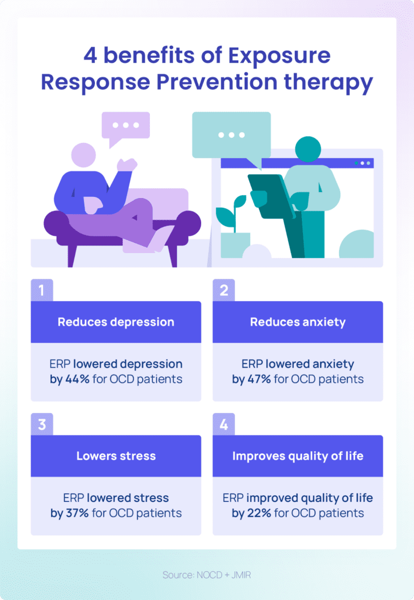

Obsessive-Compulsive Dissorder
Through greater awareness and education, we can envision a future where individuals with mental illnesses
are respected
and supported. Mental health impacts everyone. According to Health Canada, approximately 20% of
individuals will
experience a mental illness during their lifetime, while the remaining 80% are likely to be affected
indirectly through
family or friends.
Despite progress in understanding mental health, stigma and fear around mental
illnesses remain. Social exclusion
continues to be a significant barrier for many individuals with mental health conditions. A healthy
society is one where
acceptance and understanding replace ignorance and fear, fostering an environment of respect and
support.
What is OCD?
Obsessive-Compulsive Disorder (OCD) is a mental health condition defined by persistent obsessions and
compulsions that
cause significant distress.Obsessions are intrusive, unwanted thoughts, images, or
urges that trigger anxiety. For
example, someone might constantly fear contaminating others with germs. These thoughts are not
reflective of personal
character but are symptoms of the disorder.
Compulsions are repetitive actions or mental rituals performed to reduce the anxiety
caused by obsessions. Examples
include excessive cleaning, counting, or checking things repeatedly. While individuals with OCD often
recognize their
behaviors as irrational, they struggle to control them. OCD symptoms can evolve over time, making
understanding and
support crucial.
What Causes OCD?
The exact cause of OCD remains unclear, but it is believed to result from a combination of genetic, neurological, environmental, and psychological factors:
- Genetics: Family history plays a role, as individuals with relatives who have OCD may be at higher risk.
- Brain Function: Abnormalities in regions associated with decision-making and emotional regulation have been linked to OCD.
- Life Events: Stressful life events or trauma can trigger or exacerbate symptoms in predisposed individuals.
- Chemical Imbalances: Research suggests that an imbalance in serotonin, a neurotransmitter regulating mood and behavior, may contribute.
Understanding these factors is vital for early intervention and effective treatment.
Prevalence of OCD
OCD is the fourth most common mental health condition, affecting 2-3% of the population during their
lifetime. This
prevalence translates to millions globally. Certain groups, such as new parents, may experience higher
rates due to
unique stressors.
Unfortunately, OCD is frequently misdiagnosed or overlooked, often mistaken for
other conditions like anxiety or
depression. This lack of awareness perpetuates stigma and delays access to proper care. Raising public
understanding of
OCD can help combat these issues, ensuring timely support and reducing misconceptions.
Signs and Symptoms of OCD
OCD manifests in various ways, often combining visible compulsions with invisible obsessions:
- Common signs:Excessive handwashing, checking behaviors, or arranging items symmetrically.
- Intrusive Thoughts:Thoughts about harm, guilt, or taboo subjects, leading to internal mental rituals like silent counting or praying.
These hidden struggles often go unrecognized, even by healthcare professionals, underscoring the importance of awareness and specialized training.
Misconceptions, Taboos, and Stigmas of OCD
-
Myth #1:OCD is Just About Being Clean or Organized
OCD is not simply a preoccupation with cleanliness. Symptoms like symmetry obsessions or fears of contamination disrupt daily life. Obsessions can also involve taboo topics like sex, violence, or religion.
-
Myth #2: OCD is a minor quirk or preference.
OCD is a serious condition, not a personality quirk. It stems from trauma, stress, and brain communication issues.
-
Myth #3: Compulsions are always physical actions.
Compulsions can be mental or physical, such as silent counting or excessive washing.
-
Myth #4: OCD is rare.
OCD affects people of all ages and backgrounds. Symptoms often begin in childhood or young adulthood.
-
Myth #5: Everyone has a little OCD.
Phrases like "I’m a little OCD" trivialize the condition, which significantly disrupts lives.
-
Myth #6: OCD is Just a Phase.
OCD is chronic and requires treatment.
-
Myth #7: OCD is Due to Weak Willpower.
Treatment involves professional help, not just willpower.
-
Myth #8: OCD is Untreatable
Effective treatments include Cognitive Behavioral Therapy (CBT) and medication.
-
Myth #9: Avoiding Triggers Cures OCD
Avoidance worsens OCD over time, reinforcing fears.
-
Myth #10: OCD is the Same for Everyone.
Symptoms vary widely and require personalized treatment.
Short-Term and Long-Term Effects of OCD
-
Chronis Anxiety:
Persistent obsessions and compulsions elevate stress.
-
Depression:
Symptoms often lead to feelings of hopelessness.
-
Strain on Relationship effects:
Reassurance-seeking and compulsions test bonds.
-
Isolation:
Avoidance of social activities leads to loneliness.
-
Stress-Related Issues:
Headaches, digestive problems, and weakened immunity.
-
Sleep Disturbances:
Intrusive thoughts disrupt sleep.
Mental Health Effects
Social and Relationship Effects
Physical Health Effects
Statistics
- OCD is misdiagnosed 50.5% of the time. (NCBI)
- Comorbidity rates for eating disorders in OCD patients are as high as 41%. (NCBI)
OCD Treatment
Medications
Common options include Zoloft, Paxil, Prozac, and Luvox, which increase serotonin levels. Side effects like nausea or appetite changes may occur—consult your doctor if necessary.
Community Resources
- Empowerment Health & Wellness:Offers counseling and coping strategies.
- Valiant Behavioral Health:Provides therapy and self-care programs.
- Community Meantal Health Programs:Includes case management, peer support, and housing assistance.
Famous People with OCD
- Nikola Tesla: Known for his obsession with the number 3 and repetitive handwashing.
- Megan Fox: Actress who has shared her fear of germs.
- Leonardo DiCaprio: Oscar-winning actor with obsessive thoughts and compulsions.
References
- Canadian Mental Health Association. (2024). Mental Health in CANADA. LINK
- Canadian Mental Health Association. (2024). Obsessive Compulsive Disorder (OCD). LINK
- International OCD Foundation. (2023). Breaking Down OCD Myths: Dispelling Misconceptions and Stigma. LINK
- Canadian Mental Health Association. (2024). Mental Health in CANADA. LINK
- National Institute of Mental Health. (2023). Obsessive-Compulsive Disorder (OCD). LINK
- Canadian Mental Health Association. (2024). Mental Health in CANADA. LINK
- NOCD. (2024). 85 Must-read OCD statistics in 2024. LINK
- Canadian Mental Health Association. (2024). Mental Health in CANADA. LINK
- NeuroLaunch.com. (2024). The Long-Term Effects of OCD: Understanding the Impact on Your Life. LINK
- Canadian Mental Health Association. (2024). Mental Health in CANADA. LINK